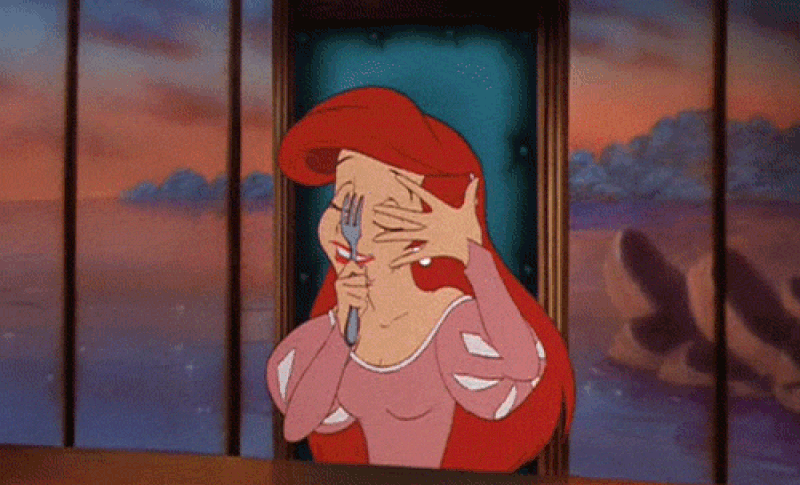

Waarin wiikkowiesti 5/2018 - Älkää antako pään kasvaa hattua isommaksi!
05.02.2018 fuksit / wiikkoviesti / waarinwartit / muistinnollaus / laskiaisrieha / työvoima / lakkitilaus /
Hellurei!
Kuka tunnistaa otsikon lainauksen alkuperän? Siihen liittyen, viime viikolla sähköpostiinne tuli jännittävä uutinen: voit nyt käydä sovittamassa ja tilaamassa oman teekkarilakkisi! Se on jännittävä hetki, kun ensimmäistä kertaa pääsee näkemään itsensä tupsulakin koristamana! Lue lisätietoja kohdasta 1.1.
Lisäksi viime viikon aikana aukesi Muistinnollauksen työvoimailmo sekä Laskiasriehan ajokin rakentaminen käynnistyi! Lähde ihmeessä mukaan puuhailemaan. Waarin wartteihinkin on vielä vapaita aikoja tälle viikolle.
<3 Milla
Sisällysluettelo
- Tärkeää
- Fuksimajurin tervehdys: lakkitilausasiaa!
- Waarin wartit 22.1. alkaen
- Fuksi- ja kilta-asiat
- Laskiaisriehan ajokin rakentaminen
- Töihin Muistinnollaukseen 2.-3.3.
- Töihin TiK-FK-AS-ystävänpäiväsitseille 9.2.
- Loppunurkkaus
Tärkeää
1. Fuksimajurin tervehdys: lakkitilausasiaa!
Arwon fuksit.
Olen saanut ilolla seurata edesottamuksianne läpi syksyn. Tähänastisessa toiminnassanne olette osoittaneet erinomaista teekkarihenkisyyttä ja reipasta tekemisen meininkiä. Puhun koko fuksitoimikunnan puolesta, kun sanon, että olemme teistä kaikista erittäin ylpeitä. En ole kuitenkaan vielä täysin vakuuttunut siitä, kannattaako teille Wappua järjestää. Tulevat tekonne sen ratkaiskoot.
Mikäli tulen myöhemmin päätöksen Wapun järjestämisestä tekemään, on kuitenkin täysin selvää, että tulevat teekkarit tarvitsevat puhtaanvalkoiset tupsulakit juhlapäivää ja sen jälkeistä teekkarielämää varten. Tästä syystä olen päättänyt antaa teille jo nyt mahdollisuuden tilata teekkarilakin. Lakin tilataksenne suorittakaa seuraavat toimenpiteet:
1) Suuntaa AYY:n Otaniemen palvelupisteelle (Otakaari 11) lakkia sovittamaan. Älä tilaa teekkarilakkia ylioppilaslakin koon perusteella. Vaikka tupsu veikeä onkin, saattaa se lakkia kummasti kallistaa, siksi onkin tärkeää, että löydät juuri sinulle sopivan lakin. Lakkia pääsee sovittamaan kulkemalla sisäänkäynnistä suoraan eteenpäin portaiden taakse, jossa on kaappiin valkoisella lapulla merkitty "Teekkarilakkien sovitus". Sinun ei tarvitse mennä erikseen palvelupisteelle, vaan voit sovittaa lakkia omatoimisesti.
2) Päätä, kumman valmistajan lakin haluat: Velmard vai Wahlman?
3) Suuntaa osoitteeseen http://lakkitilaus.ayy.fi ja tilaa lakki. Lomake aukeaa 1.2. klo 12:00. Tilaaminen vaatii sisäänkirjautumisen Aalto-tunnuksilla. HUOM! Tilaus on sitova, joten ole huolellinen sitä tehdessäsi!
4) Huomioi tilausajat! Mitä aikaisemmin Wahlmanin lakin tilaat, sitä halvempi lakki on. Velmardin lakki on samanhintainen koko tilausjakson ajan.
5) Lakkien tilausajat ja hinnat ovat seuraavat:
a) Wahlman:
Tilausjakso 1: 1.2.-28.2. Hinta: 105,00€ / TF-malli: 117,00€
Tilausjakso 2: 1.3.-8.3. Hinta: 120,00€ / TF-malli: 137,00€
b) Velmard:
Tilausjakso: 1.2.-8.3. Hinta: 50,00€
6) Tilaamisen jälkeen saat sähköpostitse vahvistuksen tilauksestasi. Lakin maksuohjeet lähetetään myöhemmin oodissa ilmoittamaasi sähköpostiosoitteeseen.
Tekniikan kehdossa
Lauri Nyrhilä
Fuksimajuri
"Suomessa kaikki hullut saavat valkolakin. Häiriintyneimmät heistä merkitään tupsulla."
Teekkarilakista:
Teekkarilakki eli teekkarien tupsulakki on tekniikan opiskelijoiden ylin ja arvokkain tunnus. Lakilla on pitkä historia, ja nykymuotoinen teekkarilakki juontaa juurensa vuoteen 1893, eli se täyttää tänä vuonna 125 vuotta. Juhlavuoden kunniaksi kirjaillaan lakin sisävuori kultaisella tähdellä. Lakin ulkomuoto on mallisuojattu ja sen valmistusta valvotaan lisensseillä.
Teekkarilakki on kesälakki ja sen käyttöaika on 1.5.-30.9. Talvisaikaan teekkarilakin käyttöoikeutta voi anoa Teekkarijaostolta lakin arvolle sopiviin tilaisuuksiin kuten yritysexcursioille tai teekkarihäihin. Sitsit tai illanistujaiset eivät ole tällaisia tapahtumia.
Kanna teekkarilakkia aina ylpeydellä ja muista käyttäytyä lakki päässä teekkarilakin arvolle kuuluvalla tavalla. Muuten paha sinut periköön ja fuksimajuri tupsulakkisi vieköön!
2. Waarin wartit 22.1. alkaen
Waarin wartit ovat jo täydessä vauhdissa, tartu sinäkin tilaisuuteesi! Waarin wartti on noin 15-30 minuutin pituinen rento jutustelutuokio fuksiwaarin kanssa. Ei tarvii jännittää :) Voit napata myös pistekorttisi mukaan Waarin warttiin, niin tsekataan puuttuvat pisteet läpi.
Varaa aika waarin warttiin kirjoittamalla nimesi tähän exceliin sinulle sopivan tyhjän ruudun kohdalle: https://docs.google.com/spreadsheets/d/1Ted1TtUfIlJE-cZI9JTd8FYVeKEXRAQOquqLAoxyKck/edit?usp=sharing
Jos mikään aika ei sovi, ota yhteyttä Millaan!
Fuksi- ja kilta-asiat
1. Laskiaisriehan ajokin rakentaminen
Laskiaisriehan ajokin rakentaminen ja suunnittelu käynnistyi viime viikolla, mutta kerkeät varmasti vielä mukaan kelkan kyytiin! Liity rakentelijoiden yhteiseen Telegram-ryhmään tästä: https://t.me/joinchat/GcH7RkEcb06ysPiaEspoHg
13.2. järjestettävän Laskiaisriehan legendaarisin osa on Akateeminen mäenlaskukilpailu, jossa joukkueet kisaavat toinen toistaan kekseliäämmillä ja näyttävämmillä rakennelmilla Laskiaisen huikeimman mäenlaskuvälineen tittelistä. Lähdetään yhdessä voittamaan kisa Tietokillalle ja ennen kaikkea pitämään hauskaa!
2. Töihin Muistinnollaukseen 2.-3.3.
Kilta täyttää bitin!
Tietokillan 33. vuosijuhlat lähestyy ja kaipaamme apua niiden järjestämisessä! Työtehtäviä löytyy niin cocktail-tilaisuuden järjestämisestä silliksen orkestrointiin. Vuosijuhlatyöskentely on oivallinen tapa ansaita työpiste fuksipistekorttiin. Tarjolla olevat työtehtävät ovat riippuen työtehtävästä noin 3-6 tunnin mittaisia. Ilmoitathan kaikki ajankohdat, jotka sinulle sopivat, sillä työtehtäviin on asetettu osallistujarajat ja tehtävät jaetaan First come - first served(FIFO) -periaatteella.
Ilmoittaudu työntekijäksi osoitteessa: https://tietokilta.fi/tapahtumat/ilmot/m0tyovoima18!
Työntekijöille järjestetään kiitokseksi oma kaato juhlien jälkeen erikseen ilmoitettavana ajankohtana.
3. Töihin TiK-FK-AS-ystävänpäiväsitseille 9.2.
Sinulla on ainutlaatuinen tilaisuus tienata puuttuvia työpisteitä Tietokillan, Fyysikkokillan ja AS:n yhteisillä ystävänpäiväsitseiltä 9.2. Lähde kokemaan sitsit kulissien toiselta puolelta ottamalla yhteyttä IE:hen Telegramissa (Lasse @Larshh tai Jussi @Impsa) tai sähköpostilla (ie@tietokilta.fi). He kertovat mielellään lisätietoja työtehtävistä! Sitsien järjestäminen on mielekästä puuhaa, joka jokaisen teekkarin olisi hyvä kokea ainakin kerran!
Loppunurkkaus
Fiilis, kun pääsee ensimmäistä kertaa silittelemään teekkarilakin tupsua <3:
